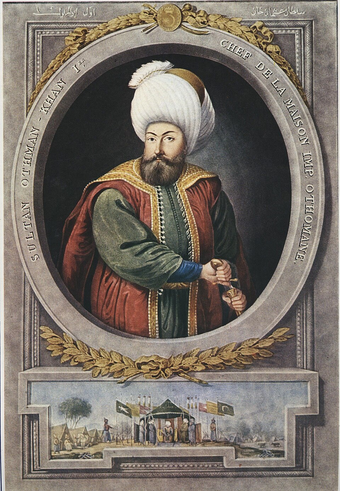
Baba Adı: Ertuğrul Gazi
Ana Adı: Halime Hatun
Doğum: Söğüt - 1258
Vefat: Bursa - 1326
Saltanat: 1299-1326
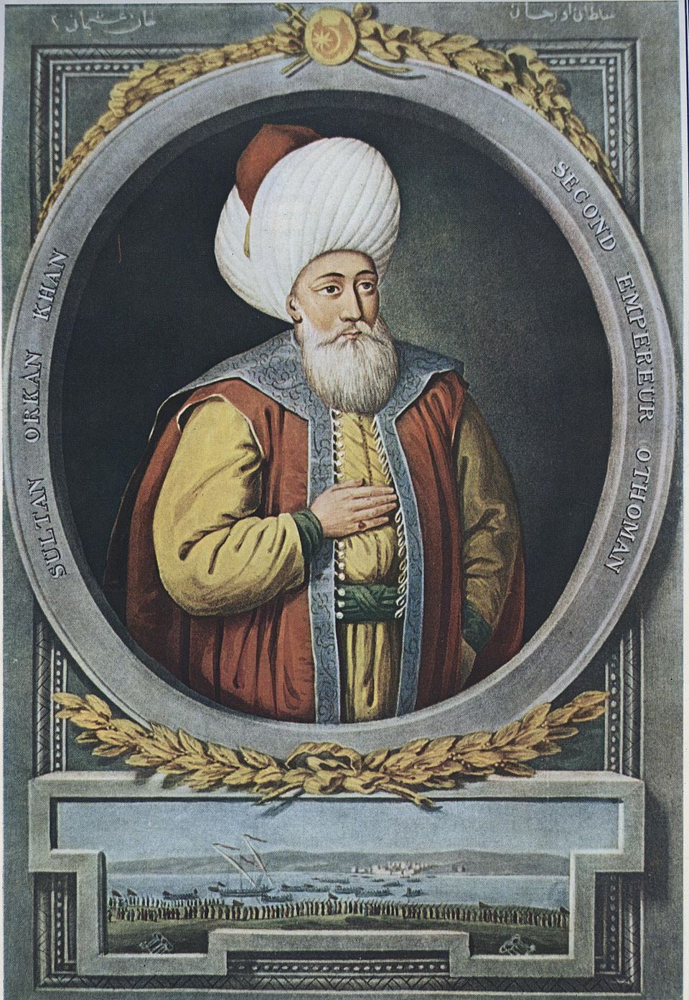
Baba Adı: Osman Gazi
Ana Adı: Malhun Hatun
Doğum: Söğüt - 1281
Vefat: Bursa - 1362
Saltanat: 1326-1362
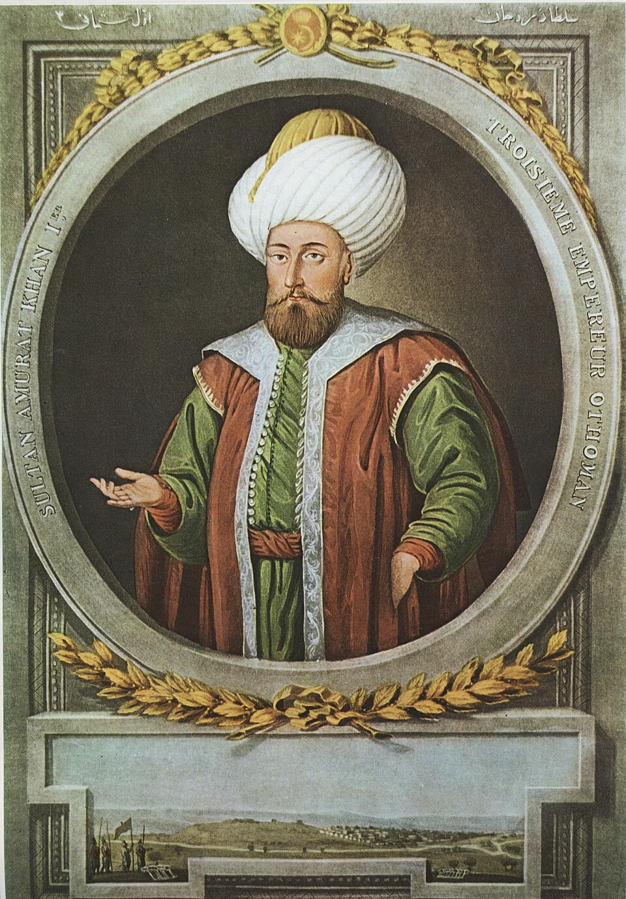
Baba Adı: Orhan Gazi
Ana Adı: Nilüfer Hatun
Doğum: Bursa - 1326
Vefat: Kosova - 1389
Saltanat: 1362-1389
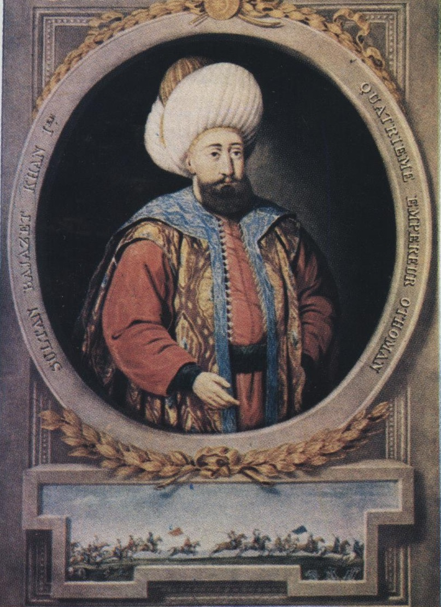
Baba Adı: I. Murad
Ana Adı: Gülçiçek Hatun
Doğum: Edirne - 1360
Vefat: Akşehir - 1403
Saltanat: 1389-1402

Osmanlı Padişahları
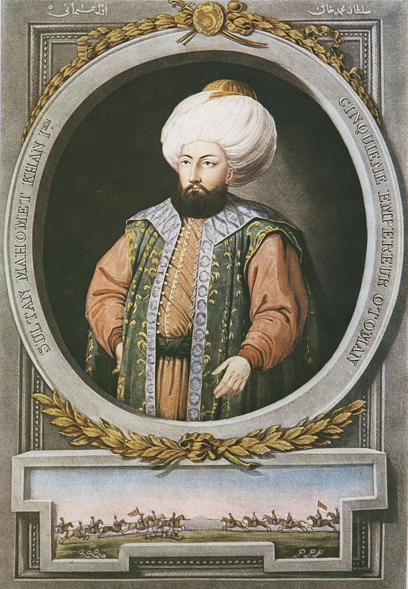
Baba Adı: I. Bayezid
Ana Adı: Devlet Hatun
Doğum: Edirne - 1382
Vefat: Edirne - 1421
Saltanat: 1413-1421
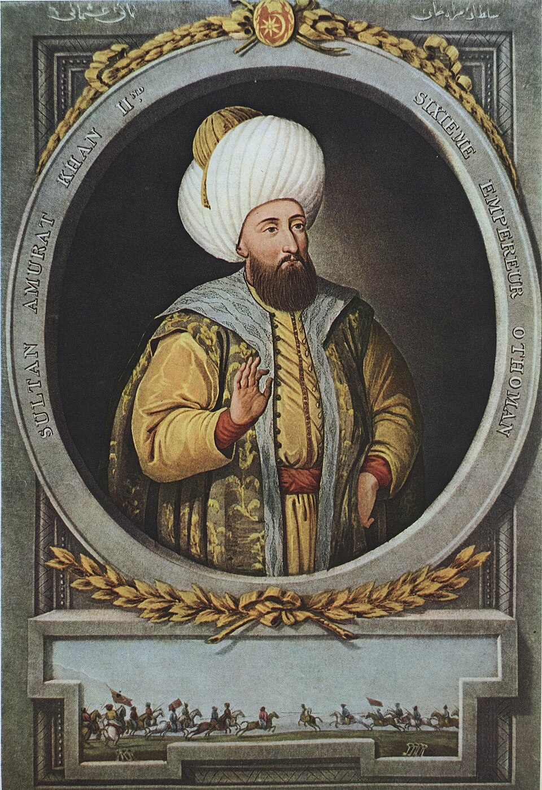
Baba Adı: I. Mehmed (Çelebi)
Ana Adı: Emine Hatun
Doğum: Amasya - 1404
Vefat: Edirne - 1451
Saltanat: 1421-1451
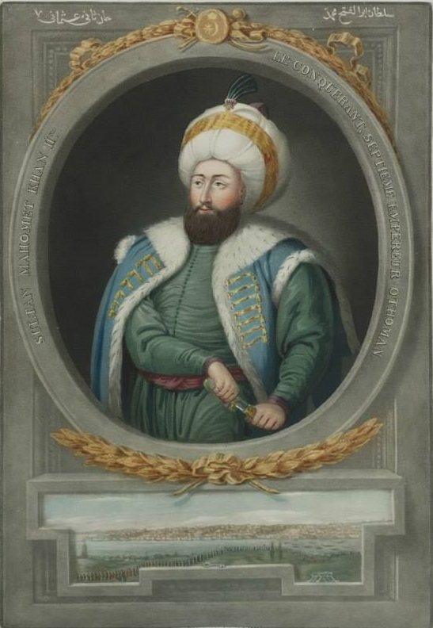
Baba Adı: II. Murad
Ana Adı: Hüma Hatun
Doğum: Edirne - 1432
Vefat: Gebze (Sefer yolunda) - 1481
Saltanat: 1451-1481
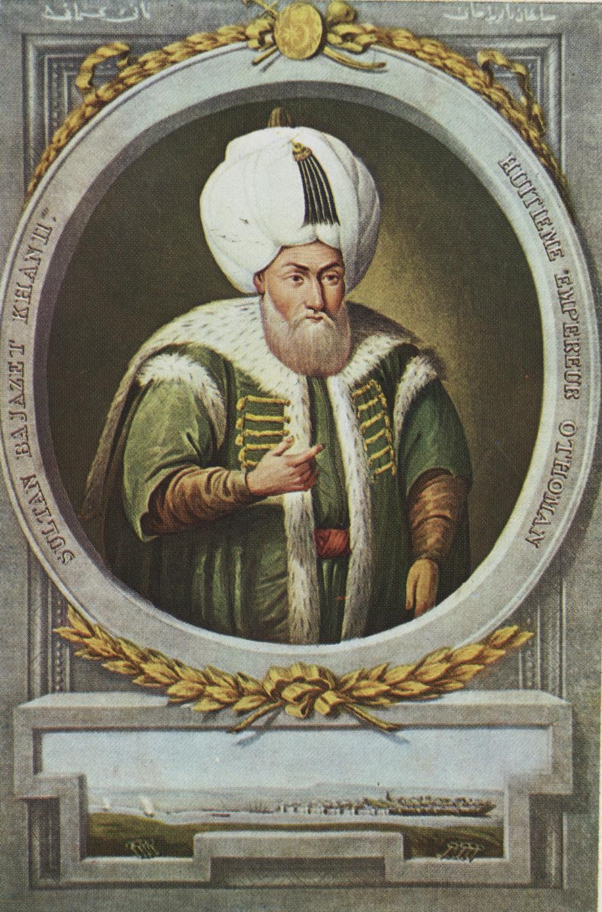
Baba Adı: Fatih Sultan Mehmed
Ana Adı: I. Gülbahar Hatun
Doğum: Dimetoka - 1447
Vefat: Edirne (Sürgün yolunda) - 1512
Saltanat: 1481-1512
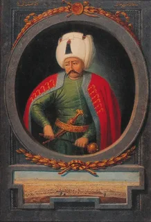
Baba Adı: II. Bayezid
Ana Adı: II. Gülbahar Hatun
Doğum: Amasya - 1470
Vefat: Çorlu - 1520
Saltanat: 1512-1520
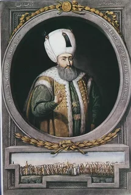
Baba Adı: Yavuz Sultan Selim
Ana Adı: Hafsa Sultan
Doğum: Trabzon - 1494
Vefat: Zigetvar - 1566
Saltanat: 1520-1566
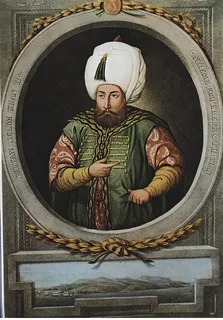
Baba Adı: Kanuni Sultan Süleyman
Ana Adı: Hürrem Sultan
Doğum: İstanbul - 1524
Vefat: İstanbul - 1574
Saltanat: 1566-1574
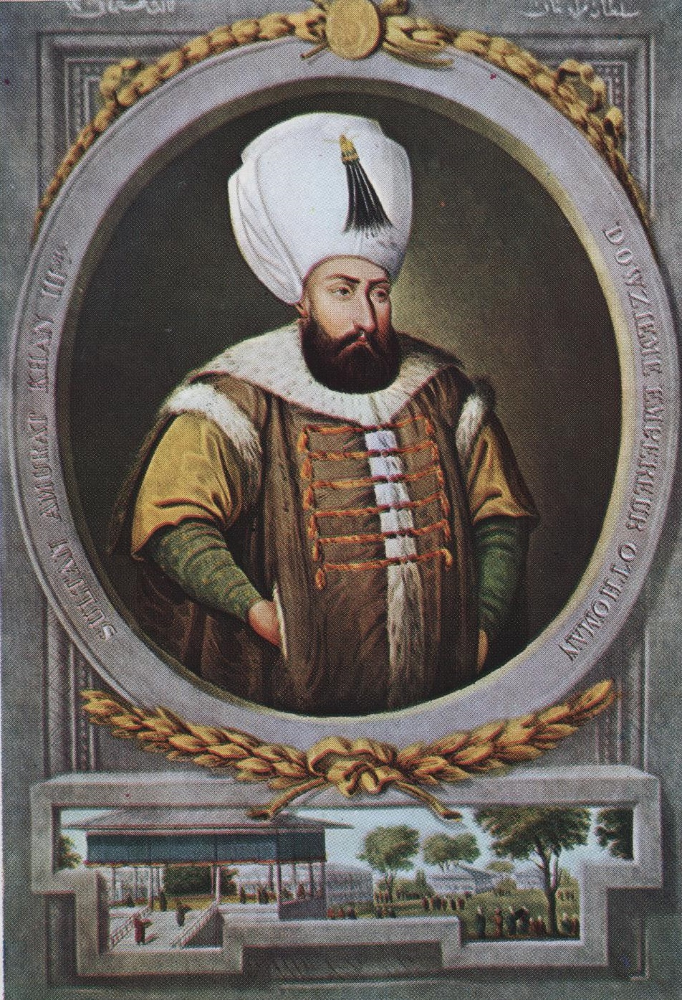
Baba Adı: II. Selim
Ana Adı: Nurbanu Sultan
Doğum: Manisa - 1546
Vefat: İstanbul - 1595
Saltanat: 1574-1595
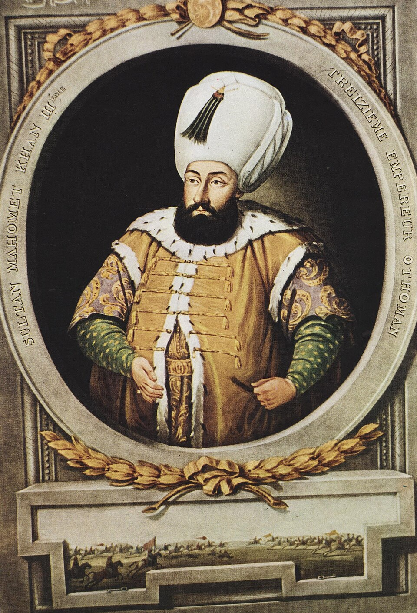
Baba Adı: III. Murad
Ana Adı: Safiye Sultan
Doğum: Manisa - 1566
Vefat: İstanbul - 1603
Saltanat: 1595-1603
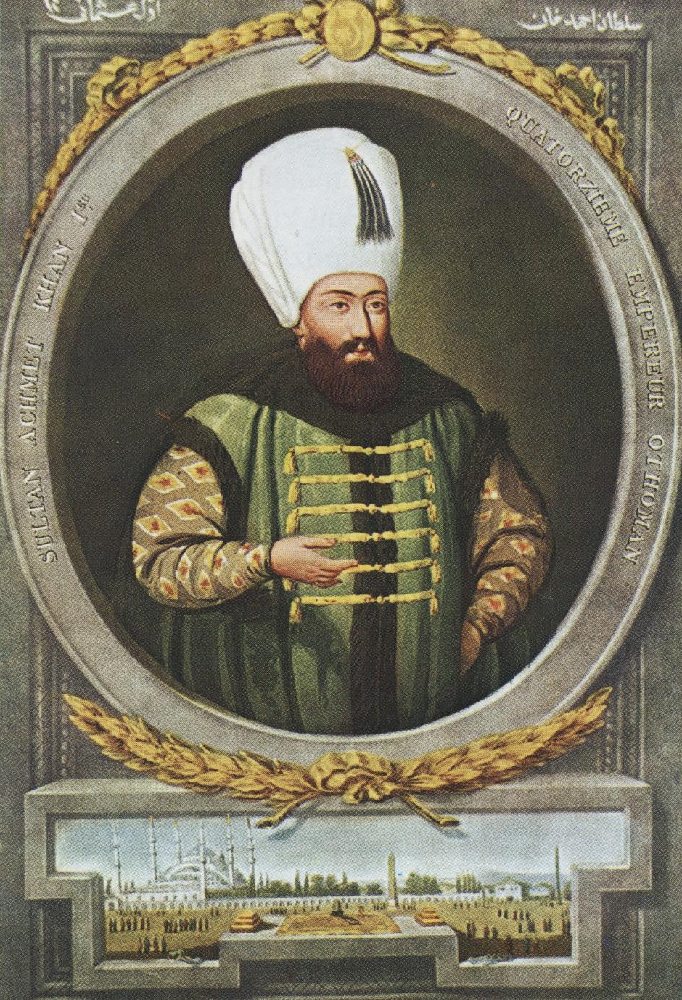
Baba Adı: III. Mehmed
Ana Adı: Handan Sultan
Doğum: Manisa - 1590
Vefat: İstanbul - 1617
Saltanat: 1603-1617

Baba Adı: III. Mehmed
Ana Adı: Halime Sultan
Doğum: Manisa - 1591
Vefat: İstanbul - 1639
Saltanat: 1617-1618 / 1622-1623
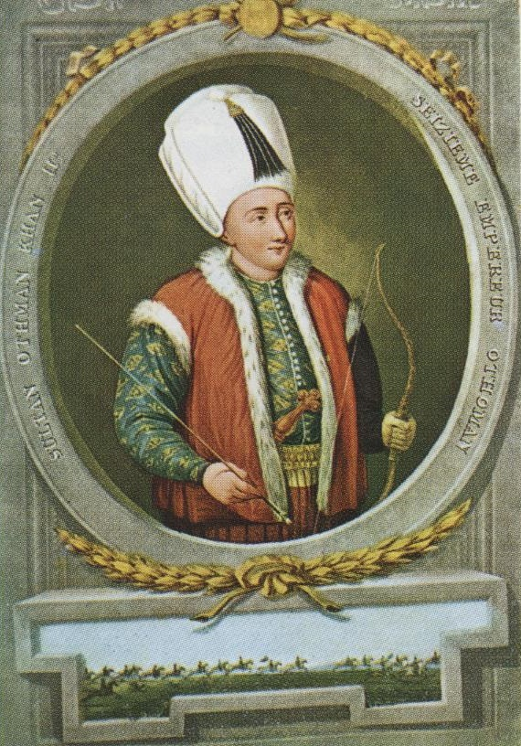
Baba Adı: I. Ahmed
Ana Adı: Mahfiruz Hatice Sultan
Doğum: İstanbul - 1604
Vefat: İstanbul - 1622
Saltanat: 1618-1622
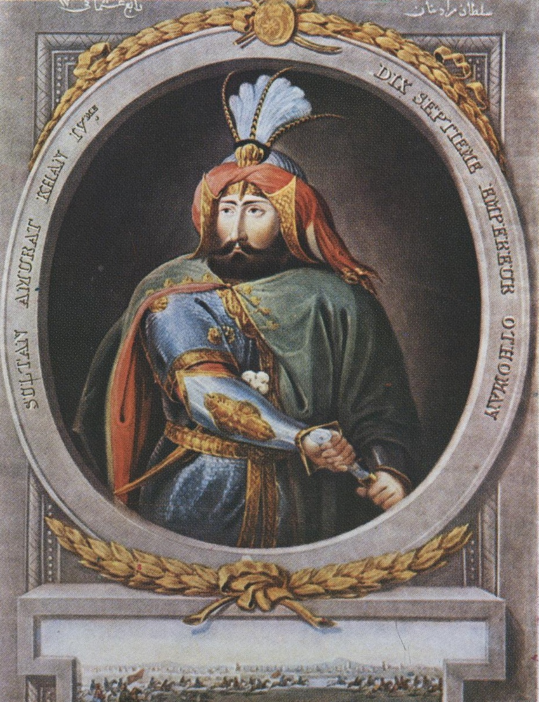
Baba Adı: I. Ahmed
Ana Adı: Kösem Sultan
Doğum: İstanbul - 1612
Vefat: İstanbul - 1640
Saltanat: 1623-1640
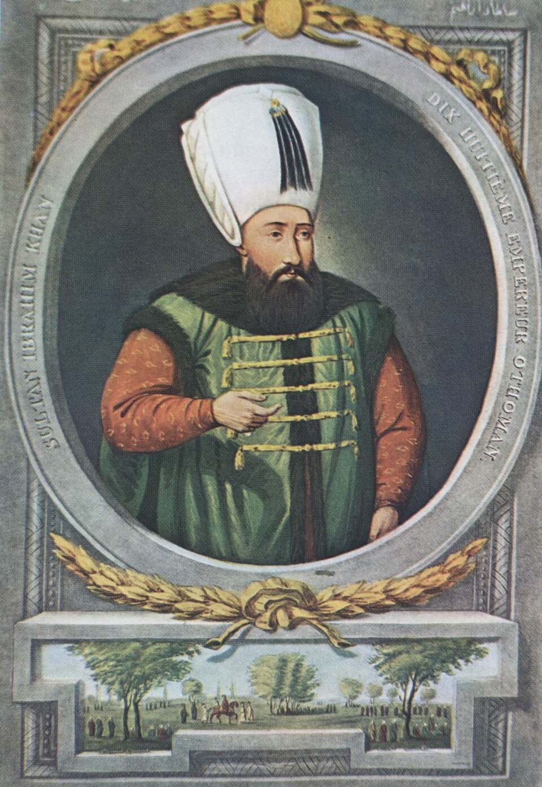
Baba Adı: I. Ahmed
Ana Adı: Kösem Sultan
Doğum: İstanbul - 1615
Vefat: İstanbul - 1648
Saltanat: 1640-1648
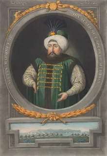
Baba Adı: Sultan İbrahim
Ana Adı: Turhan Hatice Sultan
Doğum: İstanbul - 1642
Vefat: Edirne - 1693
Saltanat: 1648-1687
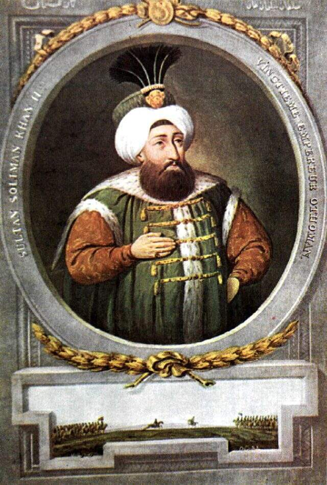
Baba Adı: Sultan İbrahim
Ana Adı: Saliha Dilaşub Sultan
Doğum: İstanbul - 1642
Vefat: Edirne - 1691
Saltanat: 1687-1691
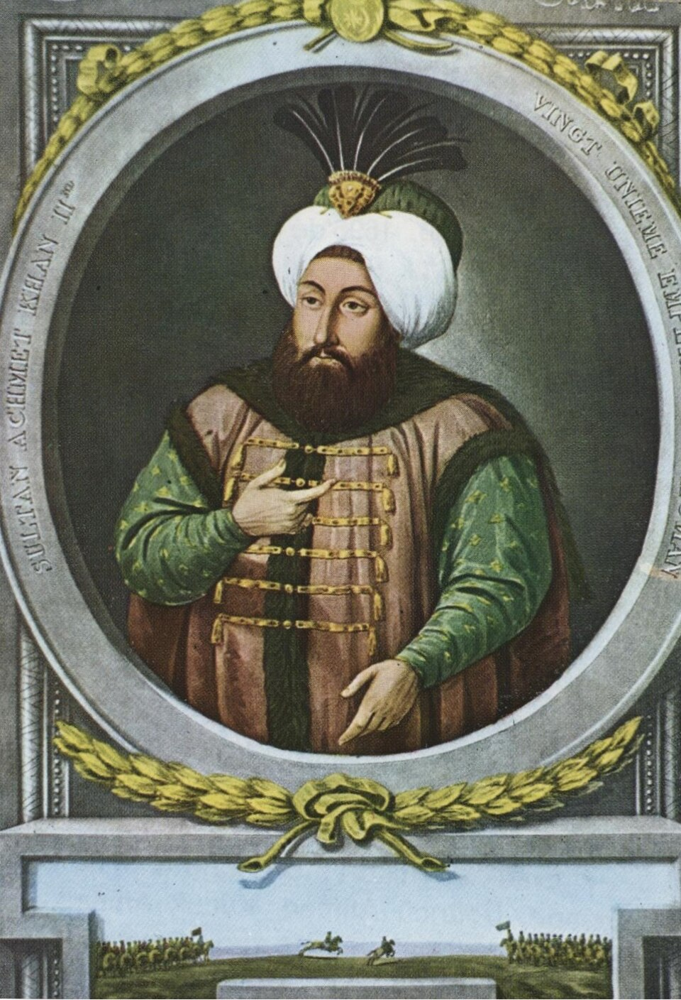
Baba Adı: Sultan İbrahim
Ana Adı: Hatice Muazzez Sultan
Doğum: İstanbul - 1643
Vefat: Edirne - 1695
Saltanat: 1691-1695
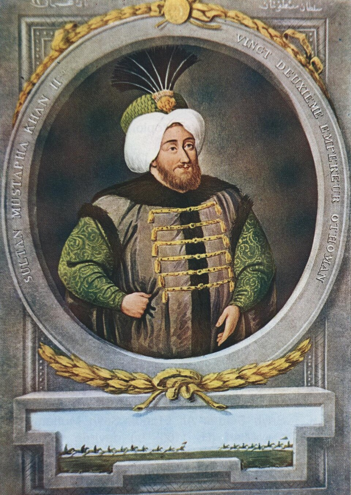
Baba Adı: IV. Mehmed
Ana Adı: E. Rabia Gülnuş Sultan
Doğum: Edirne - 1664
Vefat: İstanbul - 1703
Saltanat: 1695-1703
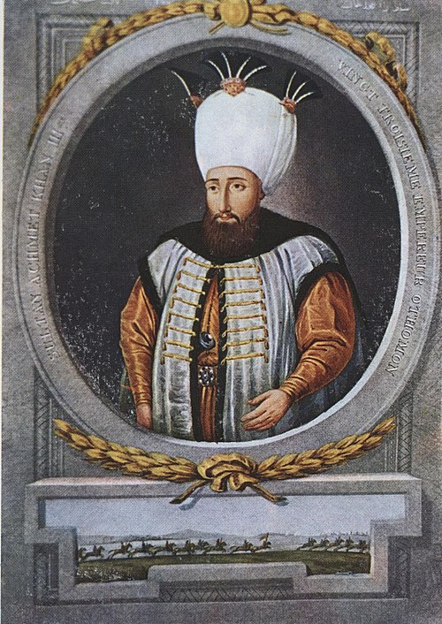
Baba Adı: IV. Mehmed
Ana Adı: E. Rabia Gülnuş Sultan
Doğum: Pazarcık - 1673
Vefat: İstanbul - 1736
Saltanat: 1703-1730
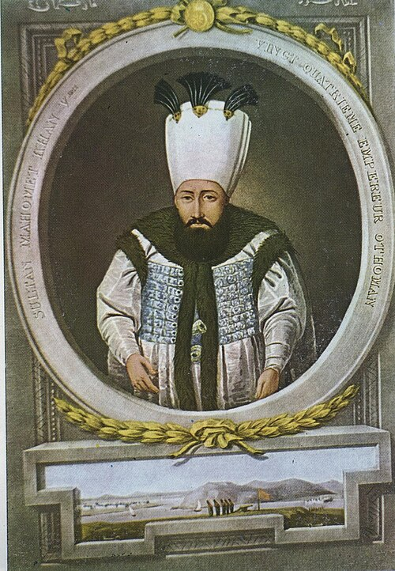
Baba Adı: II. Mustafa
Ana Adı: Saliha Sebkati Sultan
Doğum: İstanbul - 1696
Vefat: İstanbul - 1754
Saltanat: 1730-1754
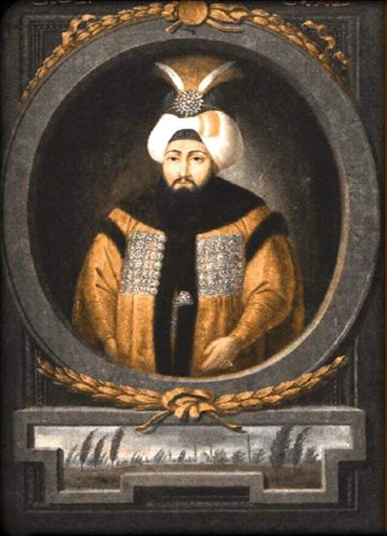
Baba Adı: II. Mustafa
Ana Adı: Şehsuvar Sultan
Doğum: Edirne - 1699
Vefat: İstanbul - 1757
Saltanat: 1754-1757
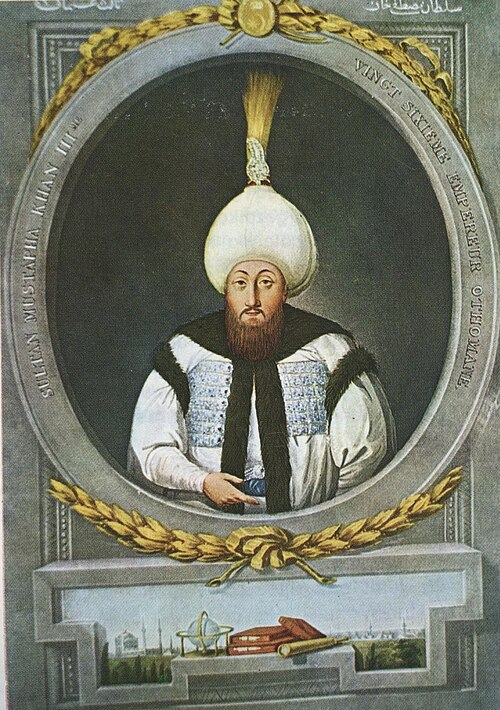
Baba Adı: III. Ahmed
Ana Adı: Mihrişah Kadın
Doğum: İstanbul - 1717
Vefat: İstanbul - 1774
Saltanat: 1757-1774
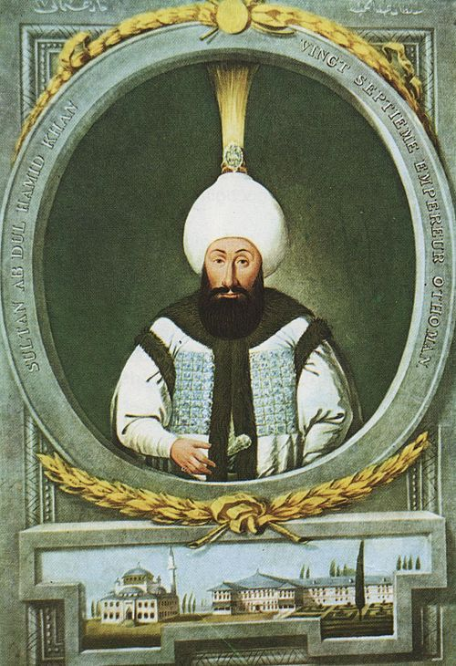
Baba Adı: III. Ahmed
Ana Adı: Rabia Şermi Sultan
Doğum: İstanbul - 1725
Vefat: İstanbul - 1789
Saltanat: 1774-1789
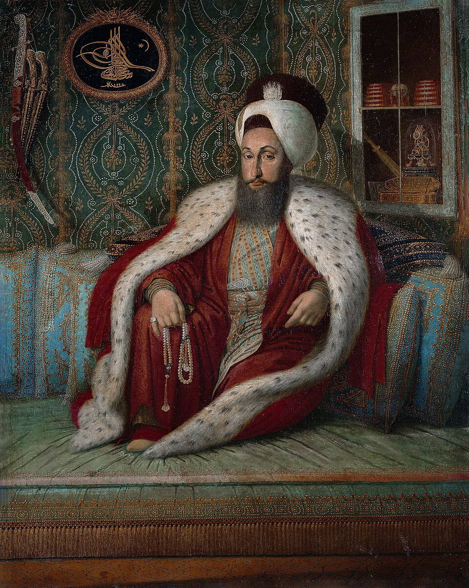
Baba Adı: III. Mustafa
Ana Adı: Mihrişah Valide Sultan
Doğum: İstanbul - 1761
Vefat: İstanbul - 1808
Saltanat: 1789-1807
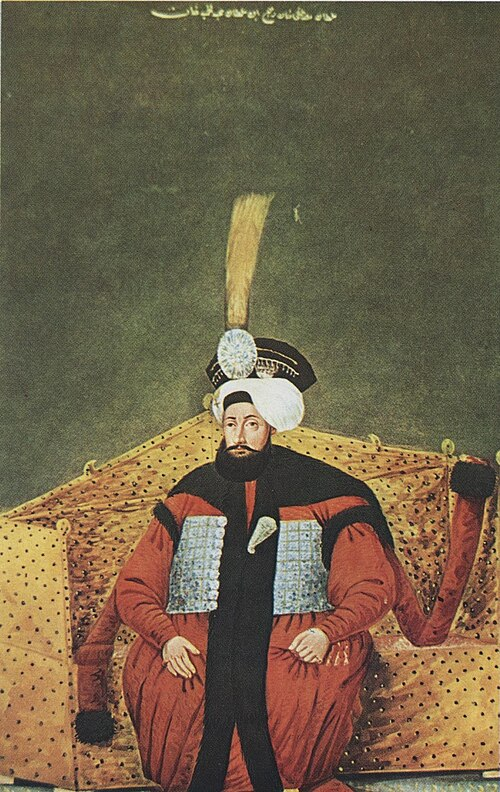
Baba Adı: I. Abdülhamid
Ana Adı: Sineperver Sultan
Doğum: İstanbul - 1779
Vefat: İstanbul - 1808
Saltanat: 1807-1808
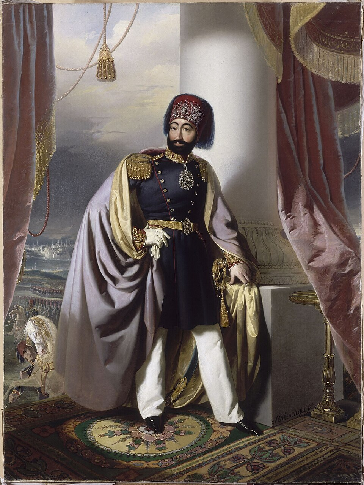
Baba Adı: I. Abdülhamid
Ana Adı: Nakşidil Sultan
Doğum: İstanbul - 1785
Vefat: İstanbul - 1839
Saltanat: 1808-1839
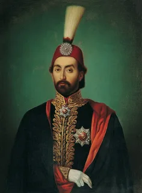
Baba Adı: II. Mahmud
Ana Adı: Bezmialem Sultan
Doğum: İstanbul - 1823
Vefat: İstanbul - 1861
Saltanat: 1839-1861
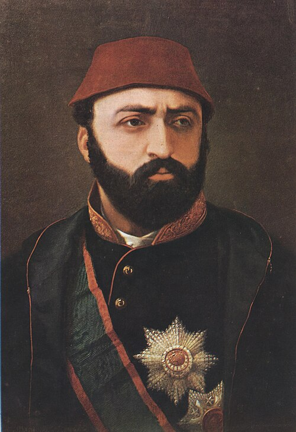
Baba Adı: II. Mahmud
Ana Adı: Pertevniyal Sultan
Doğum: İstanbul - 1830
Vefat: İstanbul - 1876
Saltanat: 1861-1876
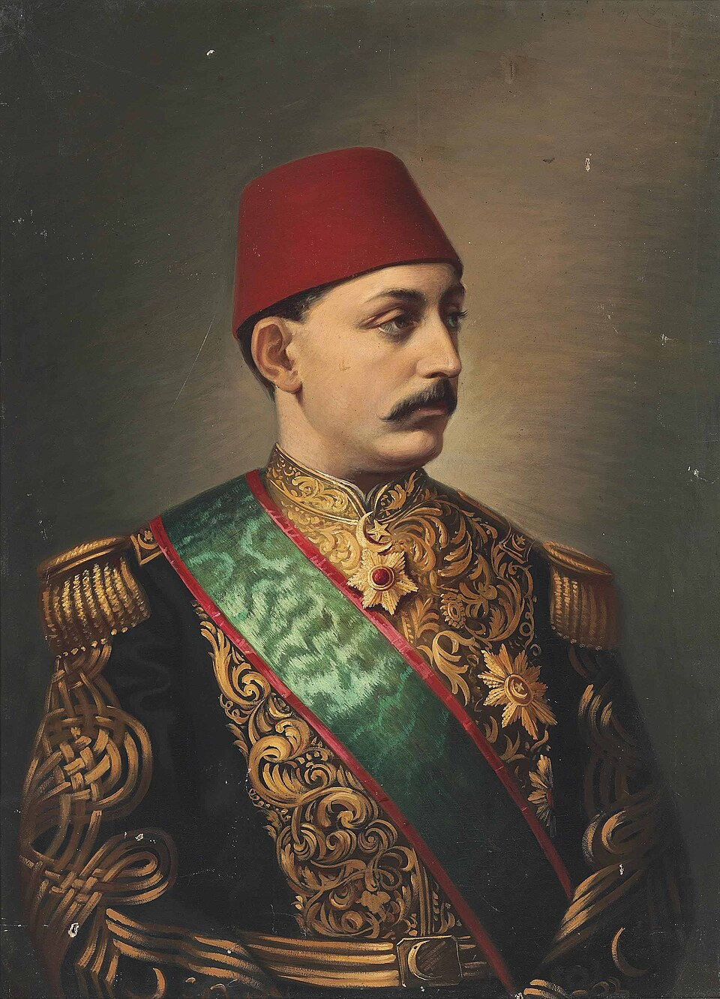
Baba Adı: Abdülmecid
Ana Adı: Şevkefza Sultan
Doğum: İstanbul - 1840
Vefat: İstanbul - 1904
Saltanat: 1876

Baba Adı: Abdülmecid
Ana Adı: Tirimüjgan Sultan
Doğum: İstanbul - 1842
Vefat: İstanbul - 1918
Saltanat: 1876-1909
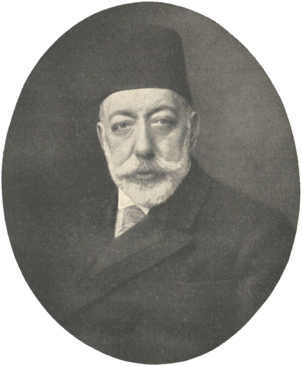
Baba Adı: Abdülmecid
Ana Adı: Gülcemal Kadınefendi
Doğum: İstanbul - 1844
Vefat: İstanbul - 1918
Saltanat: 1909-1918
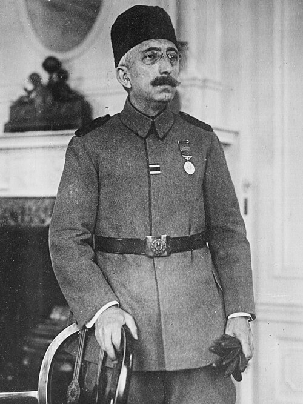
Baba Adı: Abdülmecid
Ana Adı: Gülistü Kadınefendi
Doğum: İstanbul - 1861
Vefat: San Remo - 1926
Saltanat: 1918-1922